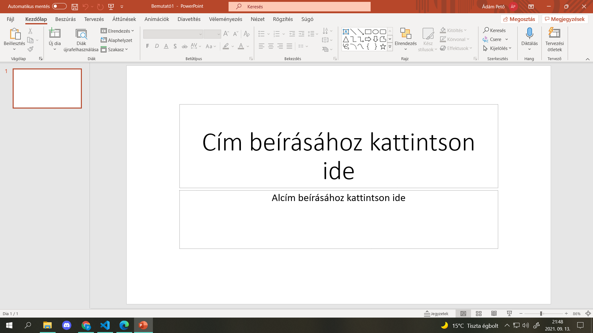

Adatbázis készítése
Ez a tantárgy az adatbázis készítése alapjait tartalmazza
Tartalom
- Az adatbázis-kezelő feladata
- Az adatbázis objektumal
- Adatbázis-kezelő rendszerek
- Az adattáblák kezelése
- Az adattáblák kezelése, kulcs fogalma
- Rekordok felvitele, módosítása, törlések
- Adattábla megjelenése, formázása
- Statisztikai számítások a táblában
- Keresés: automatikus, speciális szűrés űrlap szerint
- Lekérdezések: választó, törlő, frissítő stb.
- Adattáblák létrehozása és összekapcsolása
- Táblák feltöltése
|

|